5 nights (Tue Dec 29, 2026 – Sun Jan 3, 2027, returning 1/3). Paired with 5 nonstop SJC ↔ PVR Alaska Airlines flights ($4,780, $956/pp, 3h 35m — all 5 family members flying from California after Christmas), featuring Grand Miramar All Luxury Suites & Residences (~$8,080 total) and Garza Blanca Preserve Resort & Spa (~$11,580 total) alongside 4 additional 2BR/2BA+ suite resorts.
| Resort / Area | 2-Bedroom Residence / Suite | 5-Night Lodging (Incl. Taxes) | Total w/ 5 SJC Flights ($4,780) |
|---|---|---|---|
| Conchas Chinas (Puerto Vallarta) MAIN PAGE PICK (★ 4.6) |
Grand Miramar All Luxury Suites & Residences Two-Bedroom Family Residence (1,720 sq ft, 2BR/2BA) — 1 King BR + 2 Doubles BR on opposite sides, full kitchen, 6-seat dining & ocean-view terrace |
~$3,300 | ~$8,080 |
| Nuevo Vallarta / Flamingos DEEP DIVE BELOW (★ 4.4) |
Villa del Palmar Flamingos Beach Resort & Spa Two-Bedroom Ocean View Suite (1,309 sq ft, 2BR/3BA) — 1 King BR + 2 Queens BR + living room sofa bed, 3 full baths (w/ indoor jetted tub), full kitchen, 6-seat dining, washer/dryer & ocean-view terrace |
~$5,200 | ~$9,980 |
| Marina Vallarta | Velas Vallarta Suite Resort Two-Bedroom Family Suite (1,590 sq ft, 2BR/2BA) — 1 King BR + 2 Doubles BR + living room sofa bed, 2 full baths, full kitchen, dining/living room & bay-view terrace |
~$6,400 | ~$11,180 |
| South Shore Preserve (Puerto Vallarta) MAIN PAGE PICK (★ 4.5) |
Garza Blanca Preserve Resort & Spa Puerto Vallarta Two-Bedroom Panoramic Suite (3,229 sq ft, 2BR/3BA) — 1 King BR + 2 Queens BR + 1 Sofa Bed, 3 full baths, gourmet kitchen, living/dining & wrap-around terrace w/ hammocks |
~$6,800 | ~$11,580 |
| Riviera Nayarit / Flamingos | Villa La Estancia Beach Resort & Spa Riviera Nayarit Two-Bedroom Hacienda Suite (2,163 sq ft, 2BR/3BA) — AAA Four Diamond, 1 King BR + 2 Queens BR, 3 full marble baths, chef's kitchen, washer/dryer, living/dining & ocean-view terrace |
~$6,900 | ~$11,680 |
| Nuevo Vallarta | Marival Distinct Luxury Residences & World Spa (All-Inclusive) Two-Bedroom Residence (1,990 sq ft, 2BR/2.5BA) — full kitchen, living/dining room, beach club & all gourmet dining/drinks included (★ 4.7, 2.2K reviews) |
$7,361 (All-Inclusive) |
$12,141 |
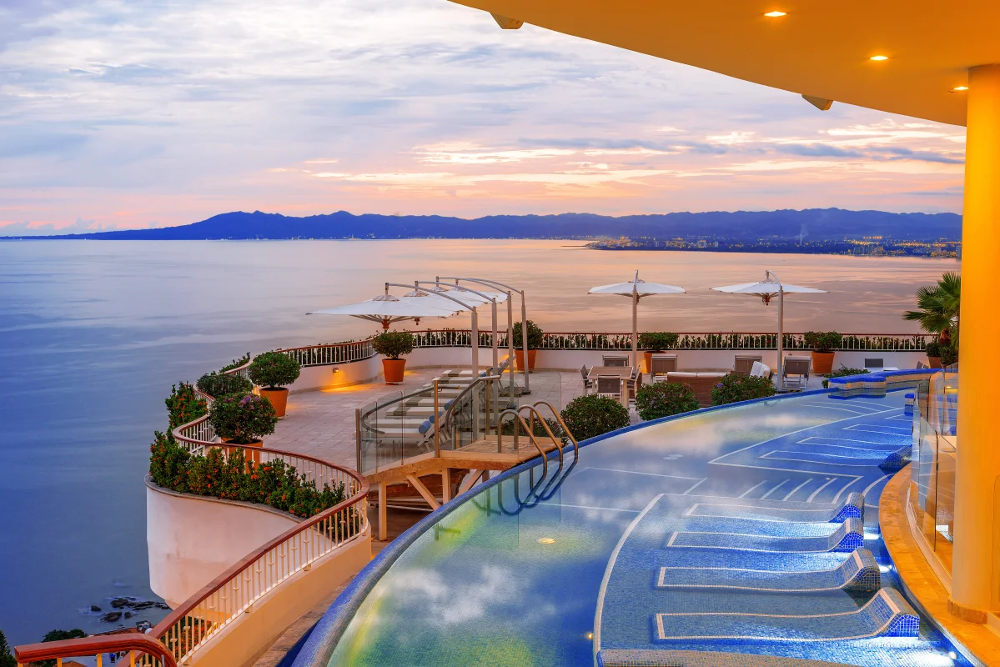
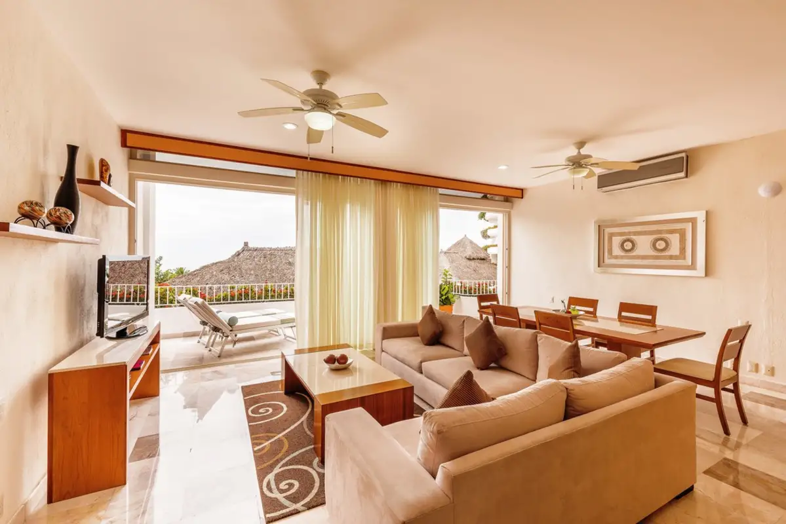
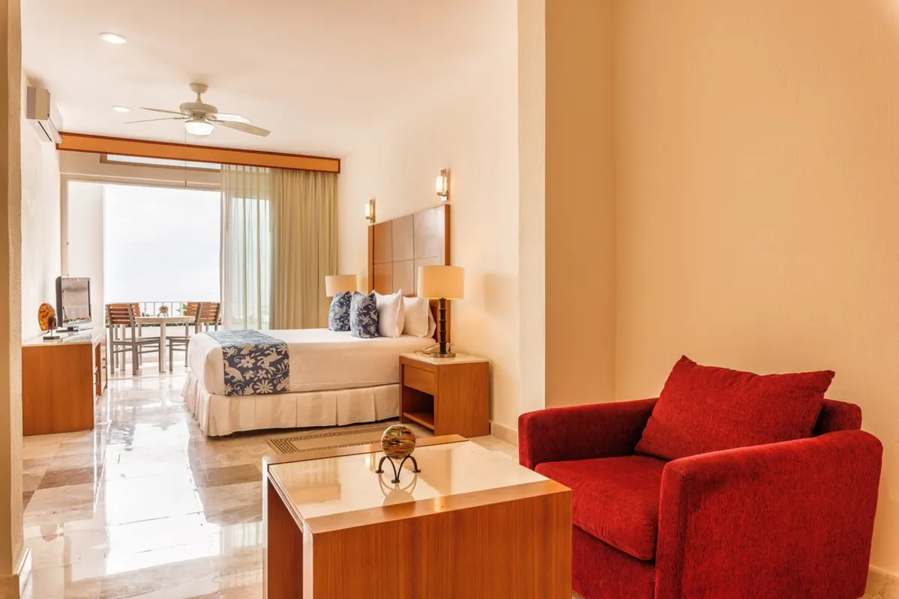
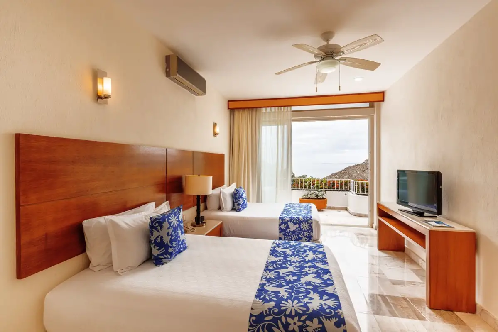
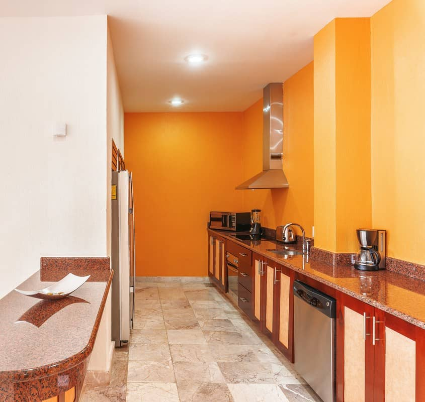
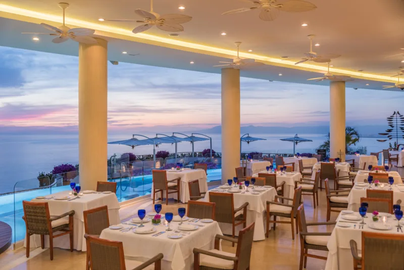
| Category | Details & What to Expect |
|---|---|
| 1. Conchas Chinas Setting & Views ("The Beverly Hills of Puerto Vallarta") |
Perched at the highest point of gated Upper Conchas Chinas (Paseo de los Corales 139) where the Sierra Madre jungle meets the bay, commanding unobstructed 180°–270° views over Banderas Bay, Los Arcos marine rocks, and city lights. In late Dec / early Jan, you can spot breaching humpback whales right from your private balcony with morning coffee.Distances: 5–8 mins ($3–$5 Uber) to Zona Romántica & Los Muertos Pier • 5 mins down the hill to Conchas Chinas beach coves • 25–30 mins to PVR airport. |
| 2. The 2-Bedroom Family Residence (1,720 sq ft / 160 m² • 2 BR / 2 BA) |
Split-Bedroom Privacy Layout: • Master Bedroom: 1 King Bed, en-suite marble bathroom, ocean views & direct terrace access. • Second Bedroom: 2 Double Beds + second full marble bathroom on the opposite side of the residence. • Living, Dining & Kitchen: Central open-concept living room, 6-person indoor dining table, full kitchen (full-size fridge, cooktop, microwave, blender, coffee maker, tableware), and wide covered ocean-view terrace. |
| 3. Pools, Rooftop & Spa (4 Heated Pools + 3 Jacuzzis) |
• Main Family Pool Level: 3 interconnected heated infinity pools, shallow sun shelf, and heated whirlpool overlooking Banderas Bay with poolside food/drink service from La Terraza. • The Rooftop Level (Sunset Deck): Sky-high infinity pool + 2 heated Jacuzzis on the top floor with panoramic 360° bay and mountain sunset views. • The View Spa & Gym: Full hydrotherapy circuit (steam room, sauna, Jacuzzi), massage cabanas, salon, and ocean-view fitness center. |
| 4. Dining (On-Site & Zona Romántica) |
• On-Site: Cielito Lindo (open-air Mexican/American breakfast & dinner), Eugenia Restaurant & Rooftop (elevated fine dining & sunset mixology), La Terraza Snack Bar (poolside ceviches, aguachiles, fish tacos), and The Coffee Bar. • 5–8 Mins to Zona Romántica: Quick $4 Uber ride to Vallarta's top culinary scene—Tintoque, Café des Artistes, La Palapa, Makal, Bravos, and Pancho's Takos. |
| 5. Honest Pros vs. Tradeoffs (vs. Garza Blanca ~$11,580) |
Pros: • ~$3,500 Savings: At ~$8,080 all-in, leaves nearly $4,000 under the $12,000 budget for fine dining and excursions. • Boutique Calm (~100 Suites): Intimate, uncrowded pools without the 7 AM mega-resort lounger rush. • Closer to Town: 5–8 mins to Zona Romántica vs. 15–20 mins south from Garza Blanca. Tradeoffs to Know Ahead of Time: • Hillside, Not Step-Out Beachfront: You cannot walk barefoot from the lobby onto the sand; getting to the beach or town requires a quick 5–7 minute, $3–$5 Uber/taxi ride down steep cobblestone streets (walking back up the hill is very steep). • Smaller Footprint than Garza Blanca: 1,720 sq ft (2BR/2BA) on a hillside terrace vs. Garza Blanca's 3,229 sq ft (2BR/3BA) on a private beachfront cove. |
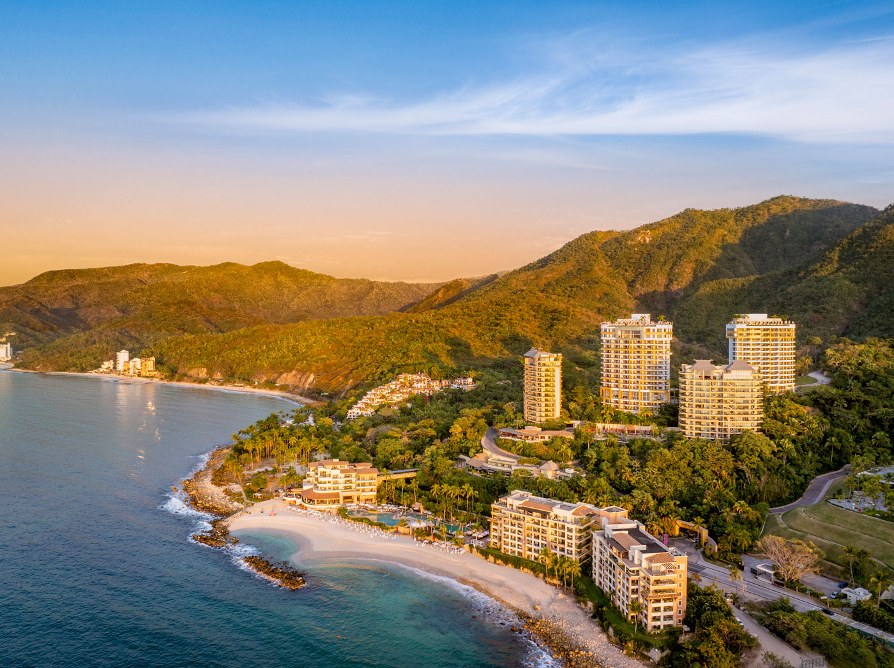
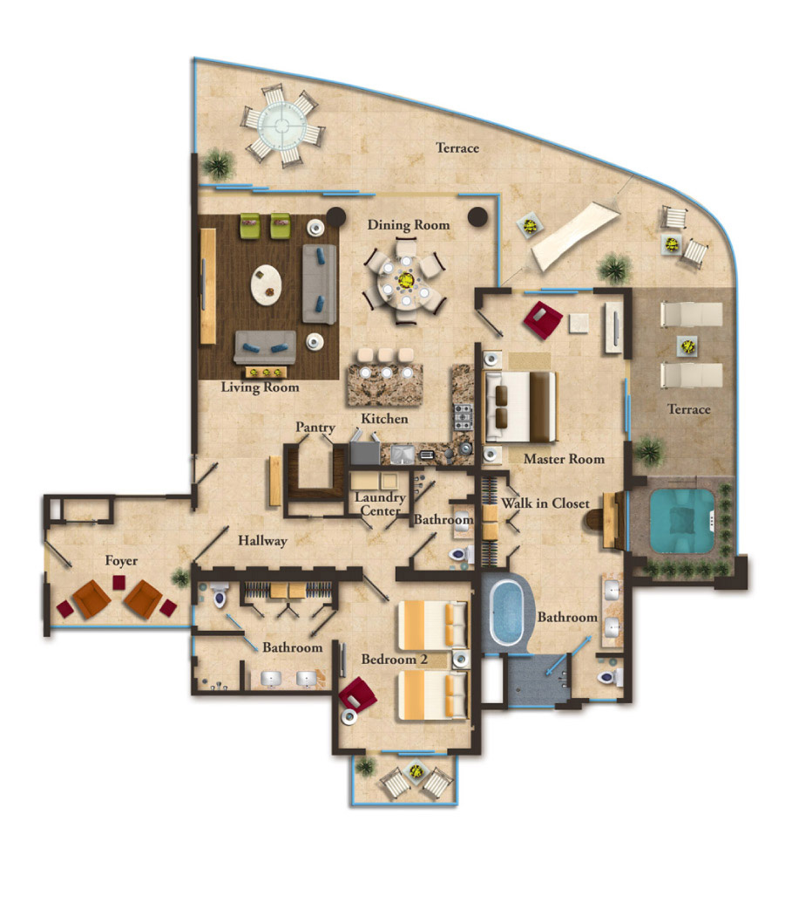
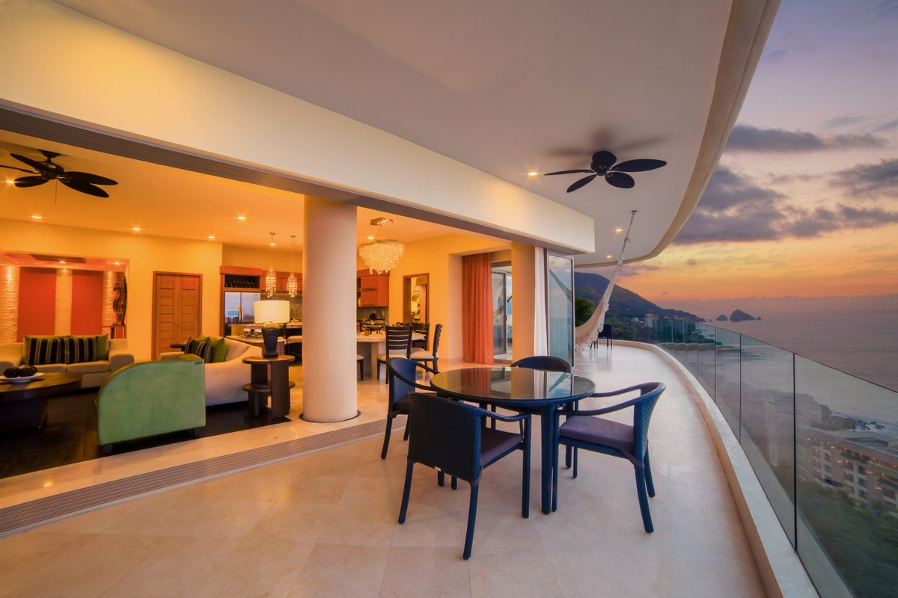
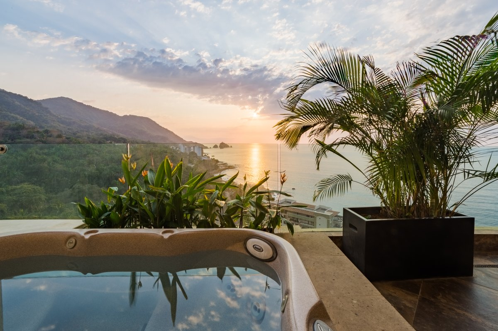
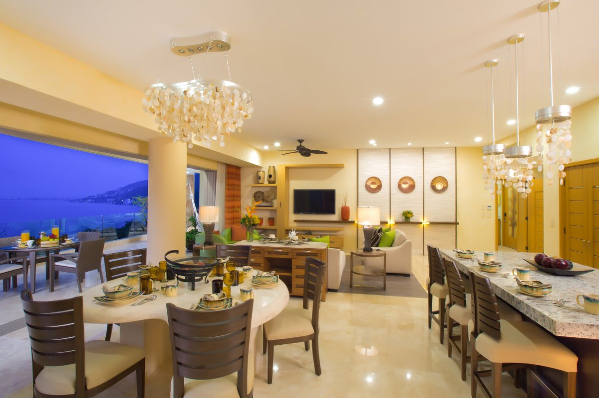
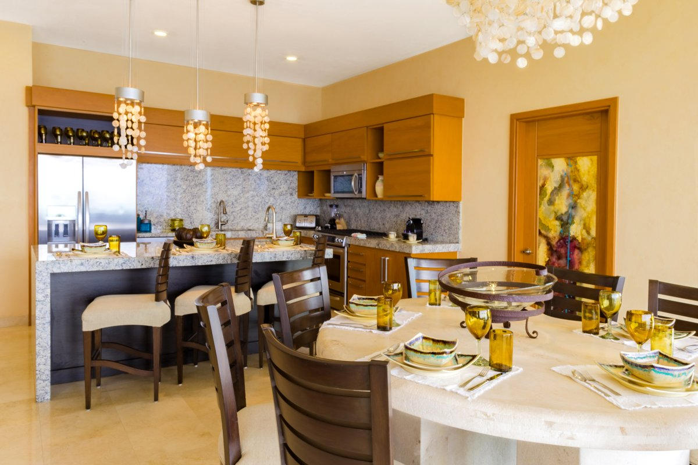
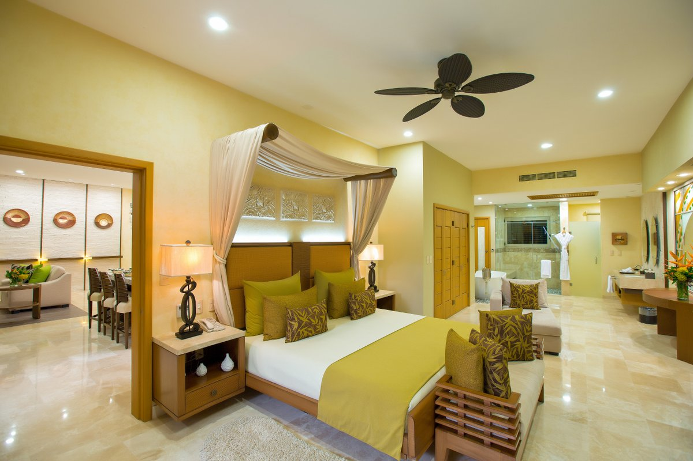
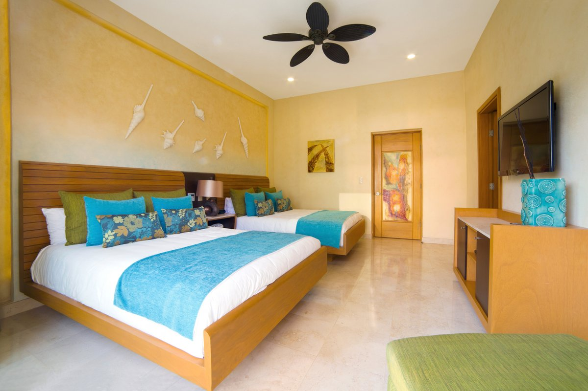
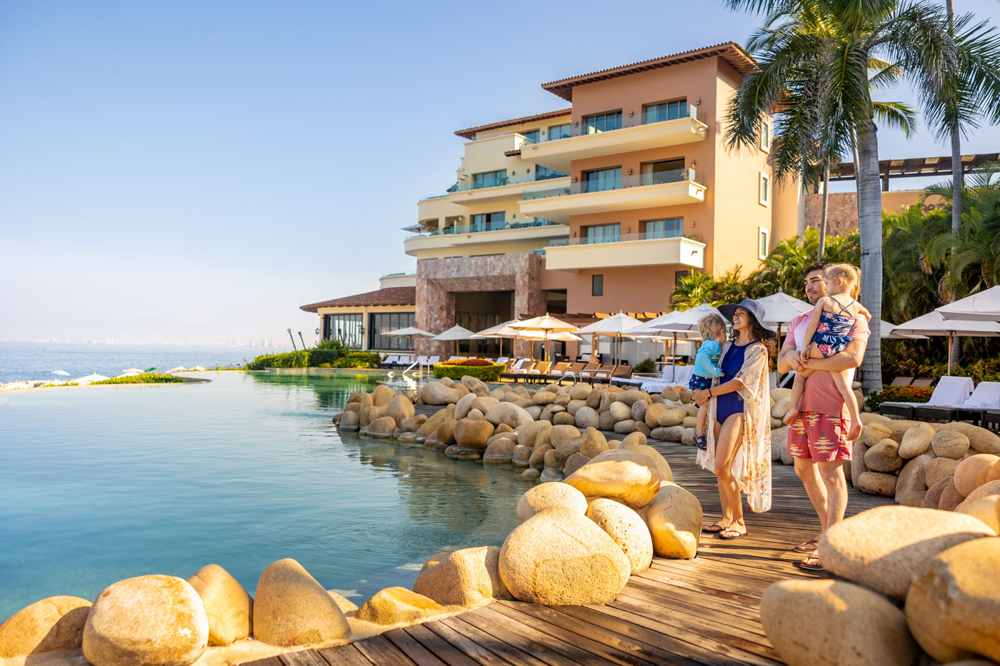
| Category | Details & What to Expect |
|---|---|
| 1. South Shore Preserve & Private Beach Cove (85-Acre Beach-to-Jungle Preserve • Blue Flag Cove) |
Set along Puerto Vallarta's scenic South Shore (Carretera a Barra de Navidad Km 7.5) where the lush Sierra Madre jungle cascades directly onto a private, reef-protected white-sand beach cove with calm, clear turquoise water.• Complimentary Activities: Sea kayaking, stand-up paddleboarding, and snorkeling right off the beach (with Los Arcos Marine Park just offshore), plus guided jungle hikes to a mountain river, birdwatching, and tennis/pickleball. • Distances: 12–15 mins ($6–$8 Uber) to Zona Romántica & Los Muertos Pier • 35–40 mins to PVR airport. |
| 2. The Two-Bedroom Panoramic Suite (3,229 sq ft / 300 m² • 2 BR / 3 Full BA) |
Massive Residence Footprint (Nearly 2x Grand Miramar's Size): • Master Suite: 1 King Bed, walk-in closet, oversized en-suite marble bathroom (freestanding soaking tub, dual vanities, rain shower), and direct sliding-door terrace access. • Second Bedroom: 2 Queen Beds + full en-suite marble bathroom. • Third Full Bathroom & Living Area: 3rd full bathroom off the spacious living room (plus sofa bed), giving a family of 5 three full bathrooms. • Gourmet Kitchen, Laundry & Wrap-Around Terrace: State-of-the-art kitchen (granite island, full-size fridge, oven/stove, dishwasher, Nespresso machine), in-suite washer/dryer, 8-person indoor dining table, and a sprawling wrap-around ocean-view terrace with handmade hammocks, alfresco dining, and a private heated Jacuzzi. |
| 3. Pools, TierraLuna Village & Spa Imagine (3 Heated Pools + Private Beach + Jungle Village) |
• 3 Heated Pools: Iconic Beachfront Infinity Pool right above the sand, Panoramic Hillside Infinity Pool at the upper towers overlooking the jungle canopy and bay, and a dedicated family pool with heated Jacuzzis. • TierraLuna Gardens: Open-air botanical jungle village inside the preserve featuring boutiques, a family carousel, live evening music, Luna Deli (Starbucks coffee & pastries), and Gelamore artisanal gelato. • Spa Imagine: Sky-high hydrotherapy circuit on the 15th floor of adjacent sister property Hotel Mousai with floor-to-ceiling Banderas Bay views. |
| 4. Dining (4 On-Site Restaurants + Room-Only Flexibility) |
• On-Site Restaurants: Blanca Blue (upscale contemporary Mexican, award-winning wine cellar & oceanfront breakfast), Bocados Steak House (hillside dry-aged steaks with sunset views), Aquazul Beach Bar & Lounge (poolside ceviches, aguachiles, wood-fired pizzas & tacos), and Karuma Gourmet Grill (at TierraLuna Gardens). • Room-Only Advantage: Booking the ~$6,800 European Plan (Room-Only) lets you stock the gourmet kitchen, enjoy casual poolside lunches at Aquazul, pick 1–2 special dinners on-site, and take a 12–15 min Uber into Zona Romántica whenever you want. |
| 5. Honest Pros vs. Tradeoffs (vs. Grand Miramar ~$8,080) |
Pros: • True Private White-Sand Beach & Water Sports: Direct access to a calm, swimmable turquoise cove with free kayaks, paddleboards, and snorkeling. • Enormous 3,229 sq ft Suite w/ 3 Full Baths & Washer/Dryer: Nearly double the size of Grand Miramar (3,229 vs. 1,720 sq ft), 2 Queen beds (vs. 2 Doubles) in the 2nd bedroom, a 3rd full bathroom, in-unit laundry, and a private terrace hot tub + hammocks. • Full 5-Star Resort Ecosystem: 3 signature pools, TierraLuna jungle village, guided hikes, and 4 on-site restaurants. Tradeoffs to Know Ahead of Time: • ~$3,500 Higher Cost (~$11,580 vs. ~$8,080): Sits right near the top of the $12,000 budget before meals and excursions. • Hillside Panoramic Towers (Towers 4–5) Trolley Ride to Beach: The "Two-Bedroom Panoramic Suites" sit in the elevated hillside towers (Towers 4 & 5) for sweeping ocean-and-mountain views; reaching the beach takes a 3–5 minute ride on the resort's frequent open-air trolley (though Towers 4–5 have their own quiet hillside infinity pool and Bocados Steak House right downstairs). • Slightly Further South: 12–15 mins south of Zona Romántica vs. 5–8 mins from Grand Miramar. (Tip: Politely decline the "welcome breakfast" vacation-club presentation at check-in.) |
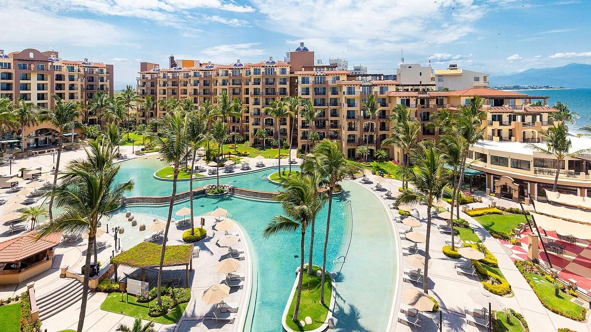
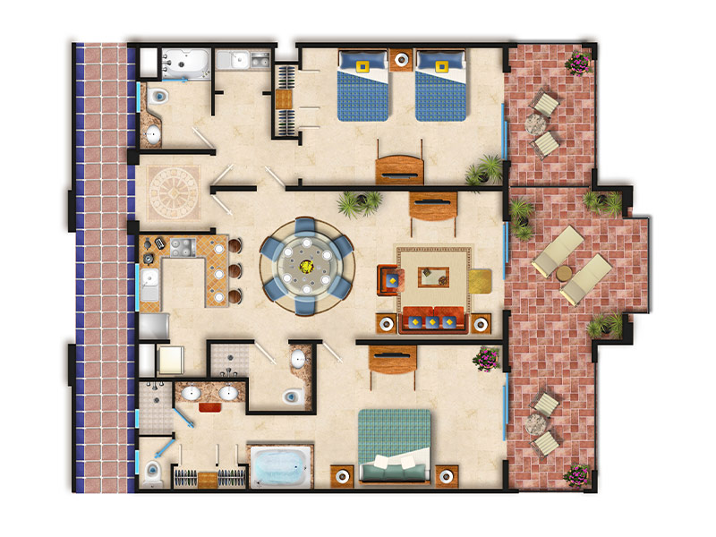
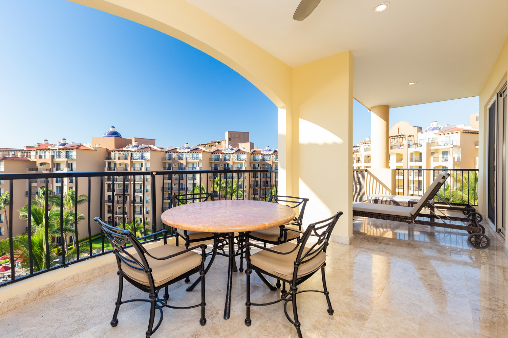
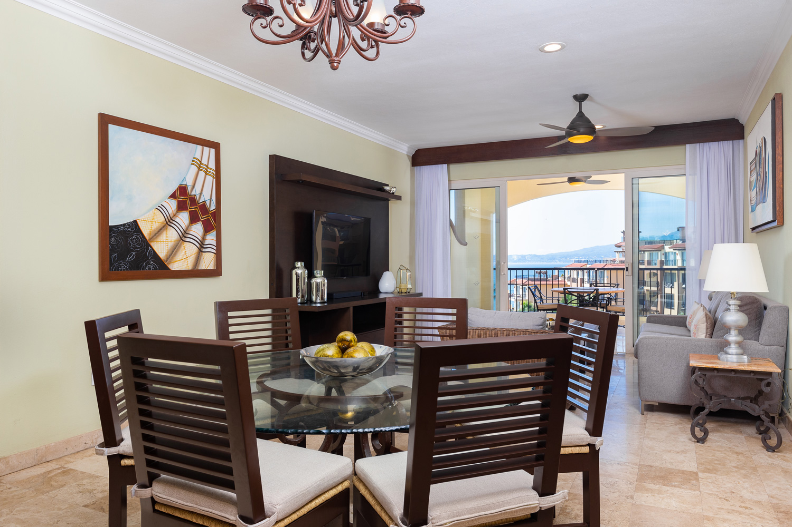
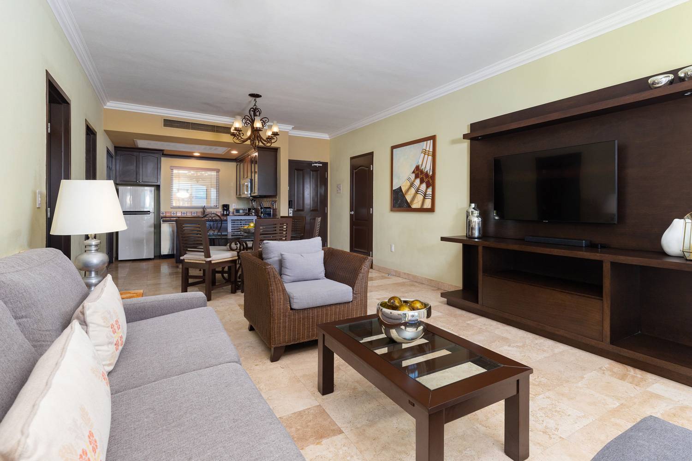
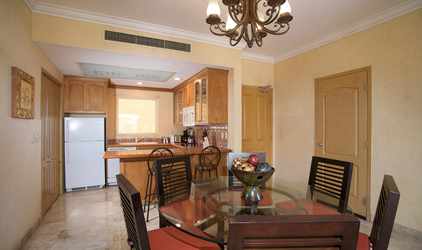
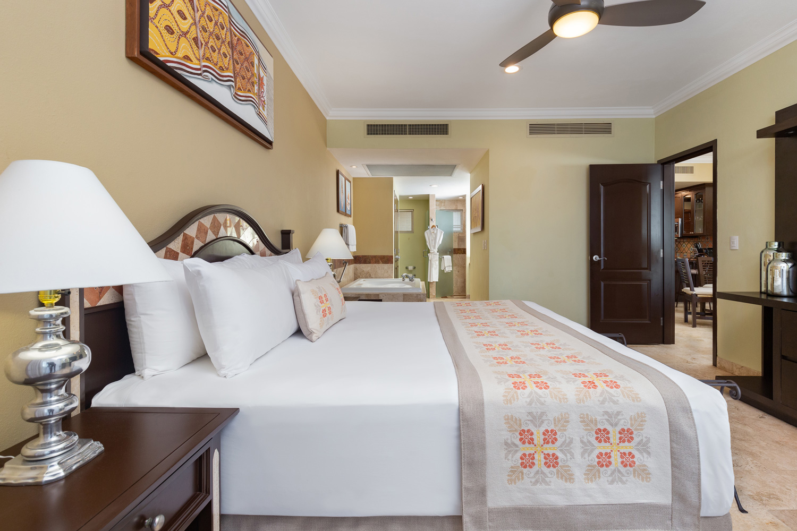
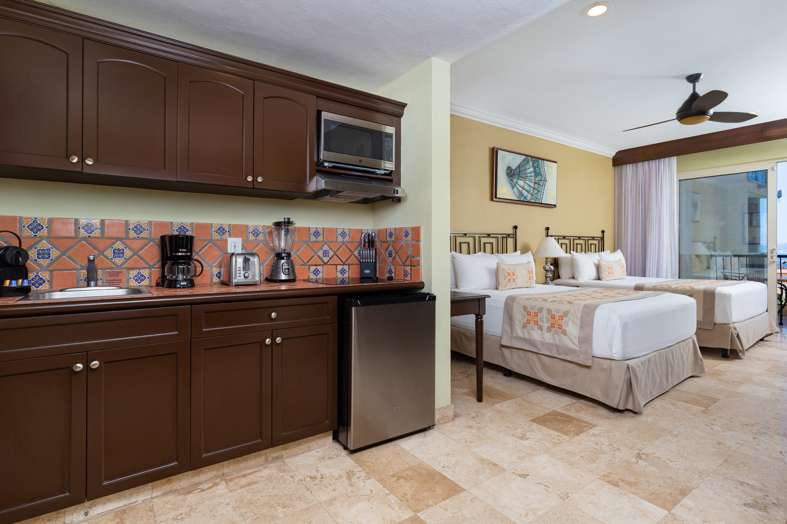
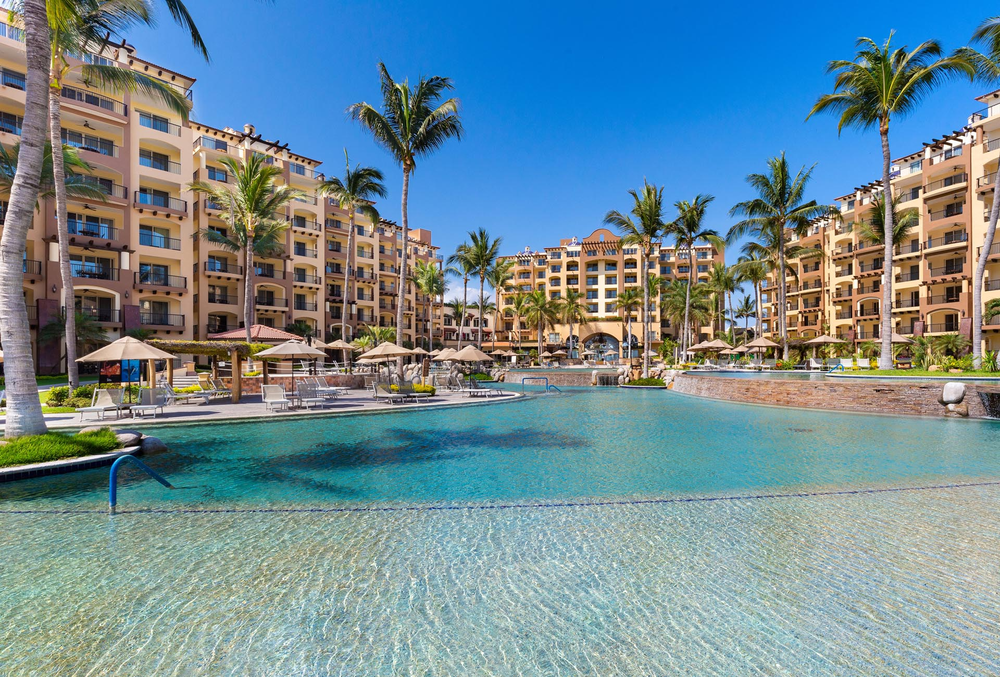
| Category | Details & What to Expect |
|---|---|
| 1. Flamingos Beach Setting (Riviera Nayarit) (Wide, Flat 3-Mile Walkable Golden-Sand Beach) |
Located north of the airport in Flamingos / Nuevo Nayarit (right next door to AAA Four-Diamond sister resort Villa La Estancia), sitting directly on one of the widest, flattest, most swimmable golden-sand beaches on Banderas Bay. • No Hills or Steep Stairs: Unlike Conchas Chinas (Grand Miramar) or the South Shore cliffs (Garza Blanca), the entire resort and beach are completely flat—you walk straight from the elevator past the lagoon pool onto miles of soft sand with gentle waves, complimentary kayaks/paddleboards, and palapa loungers. • Distances: 5–8 mins ($4–$6 taxi/Uber, or a 25-min beach walk north) to the charming cobblestone beach town of Bucerías (La Postal, Karen's Place, Mar y Sol, art walk & taco stands) • 20–25 mins to PVR airport • 35–45 mins to Downtown PV / Zona Romántica. |
| 2. The Two-Bedroom Ocean View Suite (1,309 sq ft / 122 m² • 2 BR / 3 Full BA) |
Smart Split-Wing Layout with 3 Full Bathrooms & 2 Kitchens: • Master Bedroom Wing: 1 King Bed, direct terrace walk-out, and an en-suite marble bathroom with an indoor jetted whirlpool soaking tub, double vanity, and separate walk-in shower. • Second Bedroom Wing (Lock-Off Junior Suite): 2 Queen Beds, full en-suite bathroom (tub/shower), private balcony section, plus its own secondary kitchenette (mini-fridge, microwave, sink, coffee maker, toaster & blender). • Central Living, Dining, Main Kitchen & 3rd Full Bath: Open living room with pull-out sofa bed, 3rd full bathroom (walk-in shower), 6-seat round glass dining table, full main kitchen (full-size fridge, 4-burner electric stove, dishwasher, convection microwave), in-unit washer/dryer, and a full-width furnished ocean-view terrace. |
| 3. Pools, Beach & 17,000 sq ft Tatewari Spa |
• Multi-Tier Lagoon Pool Complex: Expansive zero-entry heated swimming pools with cascading stone waterfalls, dedicated kids/family zones, and multiple large outdoor beachfront Jacuzzis. • Tatewari Spa (17,000 sq ft): One of Banderas Bay's premier holistic spas featuring a signature Hydrotherapy Water Ritual (sauna, herbal steam room, Swiss jets, cold plunge, and massive indoor vitality Jacuzzi) plus 14 treatment suites. • On-Site Market & Deli: Full on-site grocery market (Palmita Market & Deli) + Starbucks coffee counter and creperie right on property for stocking your suite's kitchen. |
| 4. Dining (5 On-Site Venues + Bucerías Next Door) |
• On-Site Restaurants: El Patrón (upscale contemporary Mexican overlooking the beach), La Trattoria (Italian pastas & wood-fired pizzas), Tomatillos (farm-to-table seafood & grill), Yashinoki (Japanese teppanyaki & sushi), Pizza Bar / Bar Marietas (poolside snacks & brick-oven pizzas), and La Creperie. • 5 Mins to Bucerías Dining: Instead of driving 40 mins into downtown PV, you are 5 minutes from Bucerías—famous for beachfront seafood grills, courtyard Italian/Mexican dining, and street tacos at half the price of hotel restaurants. |
| 5. Honest Pros vs. Tradeoffs (Middle-Ground Pick at ~$9,980 Total) |
Pros: • Sweet-Spot Price (~$9,980 All-In): Sits $2,000+ under the $12,000 budget (~$1,600 cheaper than Garza Blanca) while giving you true step-out beachfront access. • Best Walkable Beach + 3 Full Bathrooms + Laundry: Miles of flat golden sand (ideal for morning walks and swimming), 1 King + 2 Queens + 3 full bathrooms, and an in-suite washer/dryer. • Close to Bucerías & PVR Airport: Only 20 mins from the airport and 5 mins from authentic Bucerías. Tradeoffs to Know Ahead of Time: • Traditional 4-Star Timeshare Finishes (Closer to Pueblo Bonito): Built by The Villa Group (same developer as Villa del Palmar Cabo), the travertine/dark-wood interiors and 1,309 sq ft footprint feel very similar to Pueblo Bonito—comfortable and family-friendly, but not ultra-modern 5-star luxury like Garza Blanca (3,229 sq ft) or right next door at sister property Villa La Estancia (2,163 sq ft, ~$11,680). • 35–45 Mins from Downtown PV / Zona Romántica: Great if you want to stay on Flamingos Beach and dine in Bucerías, but a longer taxi ride if you plan to go into downtown Puerto Vallarta multiple nights. |